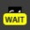
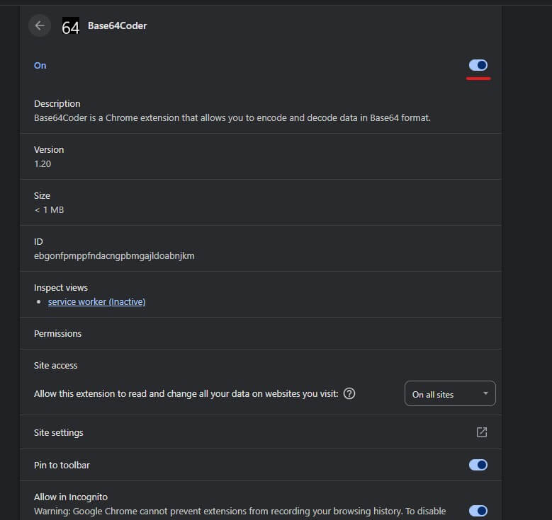

Base64Coder Guide
Base64Coder Guide
To activate the extension, enter '64' in the search bar and press 'Tab'.
Write or paste text that you want to convert and choose the conversion direction: 'base64 → text' or 'text → base64' using keyboard or mouse.


The context menu provides access to the following extension features:
- copy base64 → text — converts the selected text from base64 to text.
- copy text → base64 — converts the selected text to base64.
-
copy image → base64 — converts and copies the image under the pointer to base64. Process of converting images to base64 can take some time; you can see the progress in the extension icon.

— the process is running.— the process is done.
 — an error occurred during the process.
— an error occurred during the process.
- open base64 — opens the selected text in the extension where you can convert it to what you need.

The extension provides the following keyboard shortcuts:
- Ctrl + S — saves the result to a file. (Video is not supported)
- Ctrl + Shift + S — saves the result to a file without the base64 MIME prefix. (Video is not supported)
- Shift — buttons "Copy" and "Save" will do their function removing the base64 MIME prefix. The "Clear" buttons simultaneously clear the source and the result.
- Shift + Backspace or Shift + Delete — clears the source and the result.
-
Alt + Number — activates the corresponding button in the action area.

- Ctrl + C — copies the text result to clipboard if nothing is selected. If something is selected, the combination works as usual.
- Ctrl + Shift + C — copies the text result to clipboard without the MIME type prefix if nothing is selected. If something is selected, the combination works as usual.
- Ctrl + O — opens a file in the extension.

If the result is JSON, you can use the "Pretty" button, which formats the JSON. If JSON contains properties such as iat, exp (which usually exist in JWT), the extension allows you to view the date/time in a human-readable format.

The extension can automatically detect JWT tokens and decode them with a single click using the "jwt" button. The payload is displayed as formatted JSON.
For any JSON result (including JWT), use the "pretty" button to format it with indentation or "minify" to compress it. If the JSON contains JWT timestamp fields like iat (issued at) or exp (expiration), hover over them to see the date/time in a human-readable tooltip.
You can open any file using the "file" button (or Ctrl + O) — it will be encoded to base64 automatically. Simply drag & drop a file onto the extension page to achieve the same result. You can also paste an image or file from the clipboard (Ctrl + V).
After conversion, use the "save" button (Ctrl + S) to download the result as a file. Hold Shift while clicking "Save" to save without the base64 MIME prefix.
Base64 isn't just for text! The extension can decode base64 strings into images, audio, and video using the corresponding buttons in the "Convert to" area. For images, you'll see a preview along with resolution and file size info.
To encode media to base64, use the context menu option "copy image → base64" by right-clicking on any image on a webpage. You can also open any image file through the "file" button or drag & drop.
Try turning it off and then turning it back on.


If this doesn't help, write to me. Maybe I can help.
E-mail: rodewitsch@inbox.ru